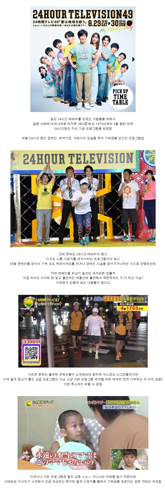
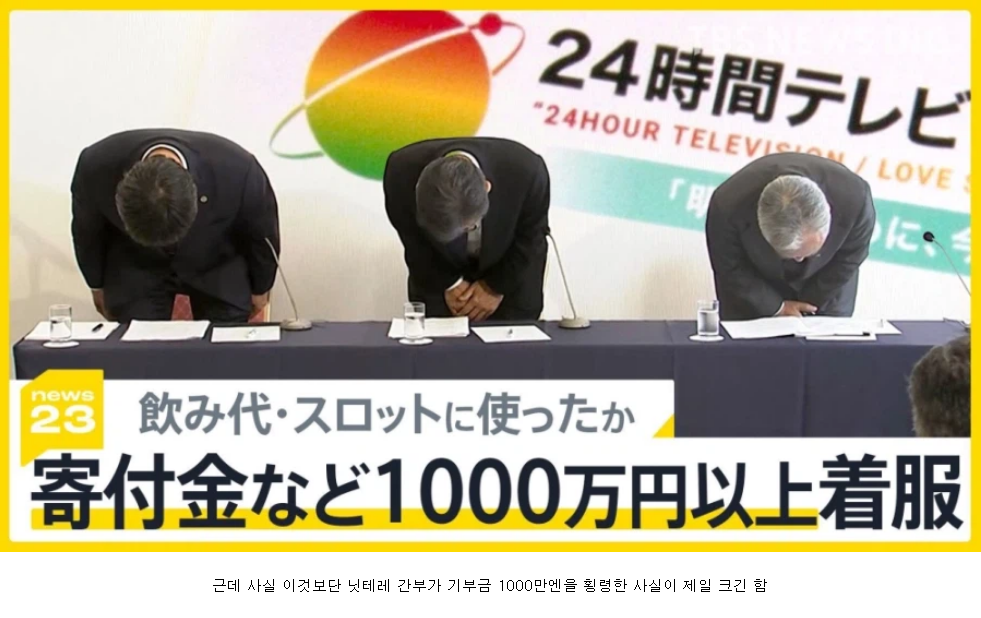

https://bbs.ruliweb.com/best/board/300143/read/76663973


https://bbs.ruliweb.com/best/board/300143/read/76663973


결론을 먼저 말해줘
ㅋㅋㅋ 아 돈이 필요한 와따사힌테 기부한거라고~
고아한테 갔으니 기부는 맞음
딱 10%만 읽을만한 가치가 있는 글
한국에도 한때 ARS로 기부 받는 프로그램들 난립하던 때가 있었지..
감성팔이 해서 시청자들 삥뜯는 것보다 국가의 사회 안전망 씹창난 걸 비판하는 프로그램 만드는 게 방송사의 책무 아닐까
세번째 짤의 연예인은 24시간동안 약 80키로 이상을 뛰게 됨
근데 운동을 안 하던 사람이 단기 트레이닝을 받더라도 근육이 놀래서 쩔뚝거리며 들어오는 사람이 많더라
가학적이랄까 저렇게까지 해야 되나 싶던데
전체적으로 프로그램 톤이 종교행사? 마쯔리같은 느낌이 있음
블루종치에미 연예계 은퇴한 원인중 하나가 저거일듯?? 그냥 일본이 전체주의가 존나 심하니까 자기 지명됬을때 거부권도 없이 할수 밖에 없었고 현타 오지게 왔겠지 자기 의견을 말할수 없는 무언의 압박 문화가 무서워진거 아닐까 카타세 나나도 은퇴하고 회사 사무직 취직했고
카타세 나나는 마약한 사와지리에리카랑 친했던 거랑 동거남이 뽕쟁이였던 거 때문에, 소속 사무실이랑 신뢰관계가 깨져서 반강제로 짤린 거라… 게다가 공식적으로 은퇴는 안함
오호 찾아보니 맞네요 블루종치에미는 왜 은퇴했을까요??
남의 기부 빼돌려서 떵떵거리는 놈들은 좀 죽었으면 좋겠는데 이미 벌 거 다 벌고 잘 살 거라 생각하면 기분 나쁘네
그냥 일본도 한국처럼 점점 지상파 안보고 있는거 아님?
후원금 횡령한게 더 문제아님?
우리나라는 저거보다 훨씬커도 사죄 잘 안하지않나 ㅋㅋ
요즘 비리스케일이 커서
어딜가나 개새끼는있다
마지막줄 전까지는 그래도 어느정도 반박할거리가 생기는데 막줄보고 이탈한다 ㅅㅂㅋㅋ
ㅋㅋㅋ
막줄이 핵심이네 시발것